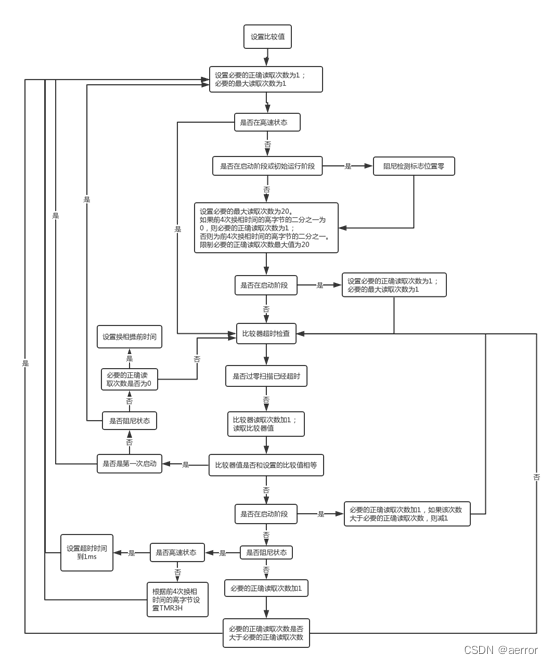

我们接着细细读一下wait_for_comp_out_low和wait_for_comp_out_high。
如上面看到的，这两个方法是由 run1-6最开始读取的， 可以看到，high low都差不多，只是访问的Bit_Access不一样, BitAccess是用来检查CMP0CN0.CPOUT的结果的，就是CPOUT是0表示电压CP0P < CP0N，1表示CP0P > CP0N。 即当不是转向刹车时，wait..low的时候，要看看CP0P小于CP0N, wait..high相反。
测试的针脚在换相的时候更换，如P.inc的针脚布局看到的，检测A相时CMP0MX = 43h，B相是23h, C相是13h. 查手册得，三个的CP0P（正比较输入）都是P0.3 就是公共com, 然后CP0N（负比较输入）A相是P0.4 B相是P0.2, C相是P0.1。
HIGH_RPM这个标志是当前的电机运行速度，在计算时机的时候会清空或者设置。（当Comm_Period4x_H less than 2）
先是把demag的检测标志（DEMAG_DETECTED）设置为1， 然后重置比较器的读取次数为零（Comparator_Read_Cnt）， 然后统一跳到wait_for_comp_out_start.
;**** **** **** **** **** **** **** **** **** **** **** **** ****
;
; Wait for comparator to go low/high routines
;
; No assumptions
;
; Waits for the zero cross scan wait time to elapse
; Then scans for comparator going low/high
;
;**** **** **** **** **** **** **** **** **** **** **** **** ****
wait_for_comp_out_low:
setb Flags0.DEMAG_DETECTED ; Set demag detected flag as default
mov Comparator_Read_Cnt, #0 ; Reset number of comparator reads
mov Bit_Access, #00h ; Desired comparator output
jnb Flags1.DIR_CHANGE_BRAKE, ($+6)
mov Bit_Access, #40h
ajmp wait_for_comp_out_start
wait_for_comp_out_high:
setb Flags0.DEMAG_DETECTED ; Set demag detected flag as default
mov Comparator_Read_Cnt, #0 ; Reset number of comparator reads
mov Bit_Access, #40h ; Desired comparator output
jnb Flags1.DIR_CHANGE_BRAKE, ($+6)
mov Bit_Access, #00h
Temp1是需要读到的次数，temp2是最多读到的次数，先都设置为1.
然后判断Flags1.HIGH_RPM为1，直接跳到comp_scale_samples，
否则 把temp1和temp2乘以2,跟着检查一下是不是启动的两个阶段，如果是的话，清空清磁检测标志（Flags0.DEMAG_DETECTED）。
然后赋值Temp2=20, 接着把Comm_Period4x_H 除以2， 然后把结果赋值给Temp1, 同时限制Temp1在1-20之内。
接着检查当前阶段是不是STARTUP_PHASE，要是的话，直接Temp1= 27， Temp2=27.
接着看看是不是48Mhz的cpu,要是的话Temp1和Temp2都乘以2.
上面这一堆代码其实都是根据条件来计算出Temp1和Temp2的值。
然后，我们来到comp_check_timeout，这里主要是检查是不是超时了，
如果T3_PENDING(zero cross 扫描超时会置0，开始扫描时setup_zc_scan_timeout置1)是1或者Comparator_Read_Cnt是零，跳到comp_check_timeout_not_timed_out， 说明还没有超时。
否则就是超时了，进入超时的处理：
A.如果不是STARTUP_PHASE，跳到comp_check_timeout_timeout_extended，这里会设置Flags0.COMP_TIMED_OUT， 然后跳到setup_comm_wait。
B. 否则就是在启动的阶段（STARTUP_PHASE），这里会将Startup_Zc_Timeout_Cntd减1(超时次数，wait_before_zc_scan会把它设置成2)，要是它还不是0，就跳到comp_check_timeout_extend_timeout,再调用setup_zc_scan_timeout。
comp_check_timeout_timeout_extended 这里会设置Flags0.COMP_TIMED_OUT， 然后跳到setup_comm_wait。
wait_for_comp_out_start:
; Set number of comparator readings
mov Temp1, #1 ; Number of OK readings required
mov Temp2, #1 ; Max number of readings required
jb Flags1.HIGH_RPM, comp_scale_samples ; Branch if high rpm
mov A, Flags1 ; Clear demag detected flag if start phases
anl A, #((1 SHL STARTUP_PHASE)+(1 SHL INITIAL_RUN_PHASE))
jz ($+4)
clr Flags0.DEMAG_DETECTED
mov Temp2, #20 ; Too low value (~<15) causes rough running at pwm harmonics. Too high a value (~>35) causes the RCT4215 630 to run rough on full throttle
mov A, Comm_Period4x_H ; Set number of readings higher for lower speeds
clr C
rrc A
jnz ($+3)
inc A
mov Temp1, A
clr C
subb A, #20
jc ($+4)
mov Temp1, #20
jnb Flags1.STARTUP_PHASE, comp_scale_samples
mov Temp1, #27 ; Set many samples during startup, approximately one pwm period
mov Temp2, #27
comp_scale_samples:
IF MCU_48MHZ >= 1
clr C
mov A, Temp1
rlc A
mov Temp1, A
clr C
mov A, Temp2
rlc A
mov Temp2, A
ENDIF
comp_check_timeout:
jb Flags0.T3_PENDING, comp_check_timeout_not_timed_out ; Has zero cross scan timeout elapsed?
mov A, Comparator_Read_Cnt ; Check that comparator has been read
jz comp_check_timeout_not_timed_out ; If not read - branch
jnb Flags1.STARTUP_PHASE, comp_check_timeout_timeout_extended ; Extend timeout during startup
djnz Startup_Zc_Timeout_Cntd, comp_check_timeout_extend_timeout
comp_check_timeout_timeout_extended:
setb Flags0.COMP_TIMED_OUT
ajmp setup_comm_wait接上面没有超时的流程走, 这里Comparator_Read_Cnt自增1，然后从CMP0CN0把值读到A,然后和上面选择的Bit_Access比较，如相等就跳到com_read_ok. 否则跳到comp_read_wrong。
comp_check_timeout_not_timed_out:
inc Comparator_Read_Cnt ; Increment comparator read count
Read_Comp_Out ; Read comparator output
anl A, #40h
cjne A, Bit_Access, comp_read_wrong
ajmp comp_read_ok
如果是STARTUP_PHASE 的话，com_read_wrong这里会把Temp1自增1， 要是temp1大于等于temp2（最大次数），temp1减回1，变回来原来的值，就是temp1最多只能到temp2这个值了。
然后跳回上面的comp_check_timeout，循环。
如是当前不是STARTUP_PHASE, 会跳到comp_read_wrong_not_startup
comp_read_wrong:
jnb Flags1.STARTUP_PHASE, comp_read_wrong_not_startup
inc Temp1 ; Increment number of OK readings required
clr C
mov A, Temp1
subb A, Temp2 ; If above initial requirement - do not increment further
jc ($+3)
dec Temp1
ajmp comp_check_timeout ; Continue to look for good ones来到comp_read_wrong_not_startup，
这里判断要是需要检查消磁，会跳到comp_read_wrong_extend_timeout。
如果不需要的话，那么temp1自增1， 然后和temp2比较，要是小于temp2跳回comp_check_timeout, 要是大于等于，那就跳回最开始的地方wait_for_comp_out_start重新初始化，重新检测。
comp_read_wrong_not_startup:
jb Flags0.DEMAG_DETECTED, comp_read_wrong_extend_timeout
inc Temp1 ; Increment number of OK readings required
clr C
mov A, Temp1
subb A, Temp2
jc ($+4)
ajmp wait_for_comp_out_start ; If above initial requirement - go back and restart
ajmp comp_check_timeout ; Otherwise - take another reading有消磁检测时延长超时，默认是high_rpm 的，会把timer3设置一个1ms左右的超时, 然后设置T3_PENDING, 跳加wait_for_comp_out_start，
不是high_rpm看comp_read_wrong_low_rpm。
comp_read_wrong_extend_timeout:
clr Flags0.DEMAG_DETECTED ; Clear demag detected flag
anl EIE1, #7Fh ; Disable timer 3 interrupts
mov TMR3CN0, #00h ; Timer 3 disabled and interrupt flag cleared
jnb Flags1.HIGH_RPM, comp_read_wrong_low_rpm ; Branch if not high rpm
mov TMR3L, #00h ; Set timeout to ~1ms
IF MCU_48MHZ >= 1
mov TMR3H, #0F0h
ELSE
mov TMR3H, #0F8h
ENDIF
comp_read_wrong_timeout_set:
mov TMR3CN0, #04h ; Timer 3 enabled and interrupt flag cleared
setb Flags0.T3_PENDING
orl EIE1, #80h ; Enable timer 3 interrupts
ljmp wait_for_comp_out_start ; If comparator output is not correct - go back and restart
如果没有设置high_rpm，那么来到comread_wrong_low_rpm，Temp7先默认为0xff, 这里把Comm_Period4x_H乘以4, 看看有没有借位，没有的话，就把temp7=Comm_Period4x_H，
然后以temp7去设置timer3的超时。
comp_read_wrong_low_rpm:
mov A, Comm_Period4x_H ; Set timeout to ~4x comm period 4x value
mov Temp7, #0FFh ; Default to long
IF MCU_48MHZ >= 1
clr C
rlc A
jc comp_read_wrong_load_timeout
ENDIF
clr C
rlc A
jc comp_read_wrong_load_timeout
clr C
rlc A
jc comp_read_wrong_load_timeout
mov Temp7, A
comp_read_wrong_load_timeout:
clr C
clr A
subb A, Temp7
mov TMR3L, #0
mov TMR3H, A
ajmp comp_read_wrong_timeout_set如果成功读到正确的值，那么来到comp_read_ok这里，
如果Startup_Cnt<1或者Flags0.DEMAG_DETECTED还是1，那么跳回wait_for_comp_out_start。 否则Temp1减1如果不是零，跳回comp_check_timeout。
上面条都不满的话，清空 clr Flags0.COMP_TIMED_OUT， 然后去到setup_comm_wait。
comp_read_ok:
clr C
mov A, Startup_Cnt ; Force a timeout for the first commutation
subb A, #1
jnc ($+4)
ajmp wait_for_comp_out_start
jnb Flags0.DEMAG_DETECTED, ($+5) ; Do not accept correct comparator output if it is demag
ajmp wait_for_comp_out_start
djnz Temp1, comp_read_ok_jmp ; Decrement readings counter - repeat comparator reading if not zero
ajmp ($+4)
comp_read_ok_jmp:
ajmp comp_check_timeout
clr Flags0.COMP_TIMED_OUT
setup_comm_wait 这里会初始化等待，主要是操作timer3, 先是把Wt_Comm_Start设置为当前的超时，然后再把Wt_Adv_Start设为auto reload的值, 作为下次的等待时间。 Timer3的中断主要是清空
Flags0.T3_PENDING这个值。
;**** **** **** **** **** **** **** **** **** **** **** **** ****
;
; Setup commutation timing routine
;
; No assumptions
;
; Sets up and starts wait from commutation to zero cross
;
;**** **** **** **** **** **** **** **** **** **** **** **** ****
setup_comm_wait:
clr IE_EA
anl EIE1, #7Fh ; Disable timer 3 interrupts
mov TMR3CN0, #00h ; Timer 3 disabled and interrupt flag cleared
mov TMR3L, Wt_Comm_Start_L
mov TMR3H, Wt_Comm_Start_H
mov TMR3CN0, #04h ; Timer 3 enabled and interrupt flag cleared
; Setup next wait time
mov TMR3RLL, Wt_Adv_Start_L
mov TMR3RLH, Wt_Adv_Start_H
setb Flags0.T3_PENDING
orl EIE1, #80h ; Enable timer 3 interrupts
setb IE_EA ; Enable interrupts again
接下来，检测这个比较器的行为是不是预期的。这个如果启动和初始化阶段不做，直接跳到eval_comp_exit。
其它阶段，如果COMP_TIMED_OUT为零，或者Flags1.DIR_CHANGE_BRAKE，或者Flags0.DEMAG_DETECTED也跳到eval_comp_exit。如果不满足，则跳到run_to_wait_for_power_on_fail，是一些失败的检查，最坏会跳回init_no_signal。
;**** **** **** **** **** **** **** **** **** **** **** **** ****
;
; Evaluate comparator integrity
;
; No assumptions
;
; Checks comparator signal behaviour versus expected behaviour
;
;**** **** **** **** **** **** **** **** **** **** **** **** ****
evaluate_comparator_integrity:
mov A, Flags1
anl A, #((1 SHL STARTUP_PHASE)+(1 SHL INITIAL_RUN_PHASE))
jz eval_comp_check_timeout
jb Flags1.INITIAL_RUN_PHASE, ($+5) ; Do not increment beyond startup phase
inc Startup_Cnt ; Increment counter
jmp eval_comp_exit
eval_comp_check_timeout:
jnb Flags0.COMP_TIMED_OUT, eval_comp_exit ; Has timeout elapsed?
jb Flags1.DIR_CHANGE_BRAKE, eval_comp_exit ; Do not exit run mode if it is braking
jb Flags0.DEMAG_DETECTED, eval_comp_exit ; Do not exit run mode if it is a demag situation
dec SP ; Routine exit without "ret" command
dec SP
ljmp run_to_wait_for_power_on_fail ; Yes - exit run mode
eval_comp_exit:
retrun_to_wait_for_power_on_fail，这里首先Stall_Cnt会自增1，要是油门是零，那么跳去run_to_wait_for_power_on，
run_to_wait_for_power_on会重置Stall_Cnt为0。
不是的话，就跳去run_to_wait_for_power_on_stall_done， 就会关闭所有中断, 等100ms,然后调用switch_power_off。
要是设置了brake_on_stop那么，会把a,b和c的comFet 打开。
跟着检查Stall_Cnt, 要是它小于4那么跳回wait_for_power_on， 否则跳到init_no_signal。
run_to_wait_for_power_on_fail:
inc Stall_Cnt ; Increment stall count
mov A, New_Rcp ; Check if RCP is zero, then it is a normal stop
jz run_to_wait_for_power_on
ajmp run_to_wait_for_power_on_stall_done
run_to_wait_for_power_on:
mov Stall_Cnt, #0
run_to_wait_for_power_on_stall_done:
clr IE_EA
call switch_power_off
mov Flags0, #0 ; Clear flags0
mov Flags1, #0 ; Clear flags1
IF MCU_48MHZ >= 1
Set_MCU_Clk_24MHz
ENDIF
setb IE_EA
call wait100ms ; Wait for pwm to be stopped
call switch_power_off
mov Temp1, #Pgm_Brake_On_Stop
mov A, @Temp1
jz run_to_wait_for_power_on_brake_done
AcomFET_on
BcomFET_on
CcomFET_on
run_to_wait_for_power_on_brake_done:
clr C
mov A, Stall_Cnt
subb A, #4
jc jmp_wait_for_power_on
jmp init_no_signal
jmp_wait_for_power_on:
jmp wait_for_power_on ; Go back to wait for power on
run_to_wait_for_power_on_fail是由前面的wait_for_comp_out_low和wait_for_comp_out_high的异常读取触发的。
这一篇主要是计算和等待bemf信号，还是很复杂的逻辑。
上面的流程使用分主要情况讨论，总结一下：
1. 对于非启动阶段(STARTUP_PHASE和INITIAL_RUN_PHASE都是零)，低速(HIGH_RPM==0))
1.1 一开始就会设置DEMAG_DETECTED，
1.2 初始化读取的次数和最大读取次数，最大20次，当前次数为limit(Comm_Period4x_H/2, 1, 20)
1.3 判断timer3有没有超时，要是超时跳到超时处理流程1.7
1.4 尝试去读一次比较值，读对就直接返回，读错继续走
1.5 如DEMAG_DETECTED为1，清空DEMAG_DETECTED为零， 然后Comm_Period4x_H来设置timer3，延长超时，然后跳回1.2. 因为DEMAG_DETECTED变零就不会再来了，第二次就走 1.6 了。
1.6 如读取的次数大于小于最大读取次数 跳回1.3, 否则跳回1.2
1.7 超时了，设置COMP_TIMED_OUT,然后跳到setup_comm_wait
1.8 要是DIR_CHANGE_BRAKE和DEMAG_DETECTED都没有设置的话，就会进入失败处理流程，跳到run_to_wait_for_power_on_fail。 即要是读错一次比较值后超时，不是DIR_CHANGE_BRAKE，就一定会进入失败流程了。
2. 对于非启动阶段(STARTUP_PHASE和INITIAL_RUN_PHASE都是零)，高速(HIGH_RPM==1))
和低速相比，流程是一样的 不同点：
2.1 初始化读取的次数和最大读取次数不同，这时两个都是1，
2.2 第一次设置timer3延长超时固定是0xf000, 即1 ms左右。
3. 对于启动阶段(STARTUP_PHASE和INITIAL_RUN_PHASE有一个是1)
3.1 一开始就会设置DEMAG_DETECTED
3.2 将DEMAG_DETECTED置为零， 初始化读取的次数和最大读取次数，最大20次，当前次数为limit(Comm_Period4x_H/2, 1, 20)
3.3 判断timer3有没有超时，要是超时跳到超时处理流程3.6
3.4 尝试去读一次比较值，读对就直接返回，读错继续走
3.5 自增读取次数，要是大于20, 就不会自增， 跟着跳回3.3
3.6 超时了， 判断Startup_Zc_Timeout_Cntd减1后是不是零，要是零的话，设置COMP_TIMED_OUT,然后跳到setup_comm_wait, 否则调用setup_zc_scan_timeout
3.7 setup_zc_scan_timeout 返回后跳到 3.4
下图来自网络，仅参考，有出入：

高速状态下需要正确读取1次，低速状态下需要读取前4次换相时间高字节一半的次数，最大20次，特别的，在启动阶段，需要正确读取27次
未完待续。。。